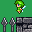

戻る

No.8 - torture
投票ポイント
総合部門：
31 pt
これはひどい部門：
3 pt
熱中部門：
7 pt
技術部門：
7 pt
シナリオ部門：
0 pt
ワロス部門：
2 pt
演出部門：
4 pt
遊びやすさ部門：
1 pt
斬新部門：
4 pt
いやらしさ部門：
3 pt
投票数：
13
投票コメント
HN: age: sex:
足場を設置できる妖精さんを操り、軽やかに空を跳ねていく2DACT
と思いきやこの妖精さんの羽は飴細工で地球の重力に魂を引かれているので要求される操作精度に遊びがない
アナログスティックの葬儀の準備はできたか？ 俺はできてない
HN:アンチまんさん age:30~39 sex:♂
簡単にクリアされたら悔しいという崇高なお思いが伝わる
HN:名梨 age:10~19 sex:♂
難しいけど熱中して楽しめました
HN:河澄 age:20~29 sex:
こころがおれるかとおもいましたがなんとかくりあできました
右手がすごく忙しくなるのでこれはいやらしさ部門ですね……
HN: age:20~29 sex:
アゼクラに時間巻き戻してほしいくらい難しいが楽しかった
HN:ゴメス大好き丸 age:0~9 sex:♂
作者はかなりのドSだと思う
私はドMなので凄く楽しめました
HN: age: sex:
i wanna be the guyやオワタの冒険の様なゲーム
余裕が全く無いのが辛い
戻る

31 pt
これはひどい部門：
3 pt
熱中部門：
7 pt
技術部門：
7 pt
シナリオ部門：
0 pt
ワロス部門：
2 pt
演出部門：
4 pt
遊びやすさ部門：
1 pt
斬新部門：
4 pt
いやらしさ部門：
3 pt
投票数：
13